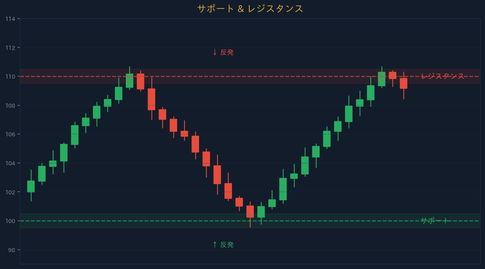
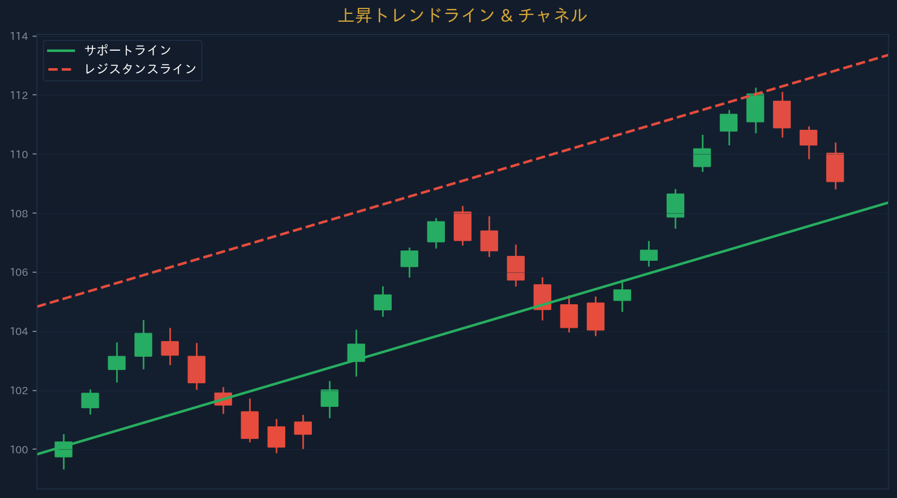
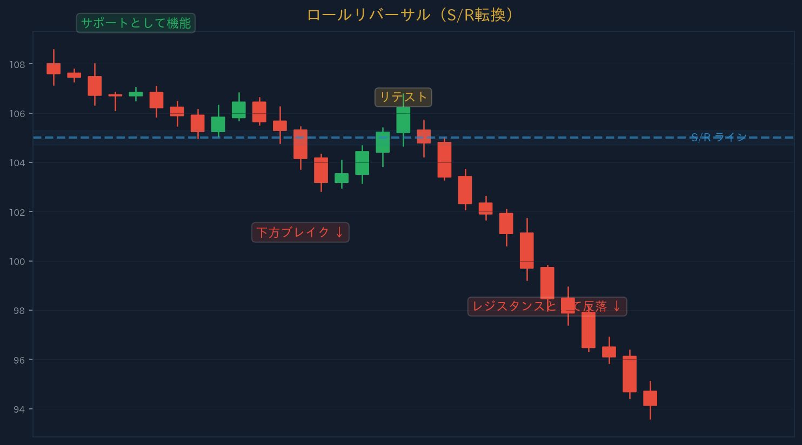

← Back
Section 09 — サポート&レジスタンス
←
1 / 7
→
SECTION 09
サポート&レジスタンス
Support & Resistance ── 価格の壁を見極める
URIKAI Trading Academy
サポートとレジスタンスの定義
サポート（支持線）
── 価格の下落を食い止める価格帯。買い注文が集中
レジスタンス（抵抗線）
── 価格の上昇を阻む価格帯。売り注文が集中
「線」ではなく
「ゾーン」
として捉えることが重要
過去に何度も反発した価格帯ほど強いS/Rとなる
すべてのテクニカル分析の
土台
となる最重要概念
POINT：S/Rはピンポイントの線ではなくゾーン。ピップ単位の精度を求めると誤判断につながる。

サポート&レジスタンス | URIKAI Trading Academy
水平S/R・トレンドライン・チャネル
水平S/R
── 過去の高値・安値、複数回タッチされた価格帯
ラウンドナンバー
（1.0000, 150.00等）＝ 心理的S/R
上昇トレンドライン
── 安値と安値を結ぶ線（サポート）
下降トレンドライン
── 高値と高値を結ぶ線（レジスタンス）
チャネル
── トレンドラインと平行線の間の価格帯
上位時間軸のS/Rほど強い：
週足 ＞ 日足 ＞ 4H ＞ 1H

サポート&レジスタンス | URIKAI Trading Academy
ダイナミックS/Rとロールリバーサル
移動平均線
が「動くS/R」として機能する
20EMA
＝短期、
50SMA
＝中期、
200SMA
＝長期S/R
ロールリバーサル
── サポートが破られるとレジスタンスに転換（逆も）
ブレイク→
リテスト
→反転確認 ＝ 高確率のエントリーパターン
リテスト時にローソク足パターンで反転確認するとさらに精度向上
POINT：ブレイク→リテスト→反転確認のセットは最も信頼性の高いエントリーパターンの一つ。

サポート&レジスタンス | URIKAI Trading Academy
まとめ
定義
買い/売り注文が集中する価格ゾーン
水平S/R
過去の高値/安値、ラウンドナンバー
トレンドライン
安値/高値を結ぶ斜めのS/R
ダイナミックS/R
移動平均線が動くS/Rとして機能
ロールリバーサル
サポート⇔レジスタンスの転換
実践
上位TF優先、ゾーンで捉える、反応確認後にエントリー
サポート&レジスタンス | URIKAI Trading Academy
確認テスト ── 3問正解で受講完了
Q1. サポートとは？
価格の下落を食い止める価格帯
価格の上昇を阻む価格帯
Q2. ロールリバーサルとは？
サポートが破られるとレジスタンスに変わること
移動平均線のクロス
Q3. S/Rは線とゾーンどちらで捉えるべき？
ピンポイントの線
一定の幅を持つゾーン
回答を確定する
サポート&レジスタンス | URIKAI Trading Academy
Section 09 Complete
Next → テクニカルインジケーター
Home
URIKAI Trading Academy
← → キーでページ移動